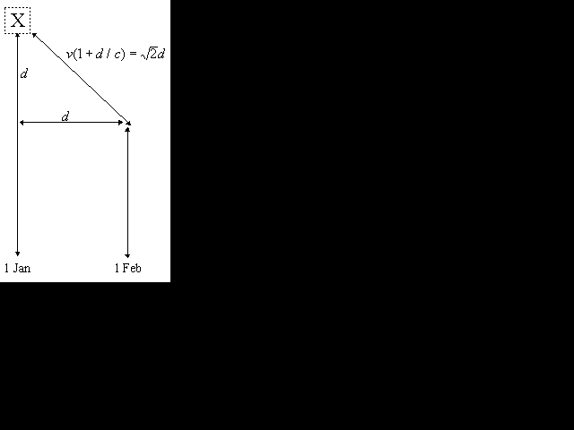

Updated 1997 by PEG;
Updated 1994 by SIC;
Original by Scott I. Chase.

A distant object can appear to travel faster than the speed of light across our line of sight, provided that it has some component of motion towards us as well as perpendicular to our line of sight. Say that on January 1st you make a position measurement of galaxy X. One month later, you measure it again. Assuming you know its distance from us by some independent measurement, you derive its linear speed, and conclude that it is moving faster than the speed of light.What have you forgotten? Let's say that on January 1st, the object is Dkm from us, and that between January 1st and February 1st, the object (which is actually moving at 45 degrees to the line of sight) has moved dkm closer to us. You have assumed that the light you measured on January 1st and February 1st were emitted exactly one month apart. Not so. The first light beam had farther to travel, and was actually emitted (1 + d/c) months before the second measurement, if we measure c in km/month. The object has travelled the given angular distance in more time than you thought. Indeed, we can calculate that if its real velocity is v, then its apparent velocity in this case is v/[sqrt(2) − v/c] which could be higher than twice the speed of light without v being greater than c. For galaxies moving at more acute angles to the line of sight the apparent velocity can be much higher. Similarly, if the object is moving away from us, the apparent angular velocity will be too slow, if you do not correct for this effect, which becomes significant when the object is moving along a line close to our line of sight.
The effect has been observed in the radio emissions from jets of quasars which are thought to travel close to the speed of light in a direction near to our line of sight.
Considerations about the Apparent `Superluminal Expansions' in Astrophysics, E. Recami, A. Castellino, G.D. Maccarrone, M. Rodono, Nuovo Cimento 93B, 119 (1986).
Apparent Superluminal Sources, Comparative Cosmology and the Cosmic Distance Scale, Mon. Not. R. Astr. Soc. 242, 423–427 (1990).